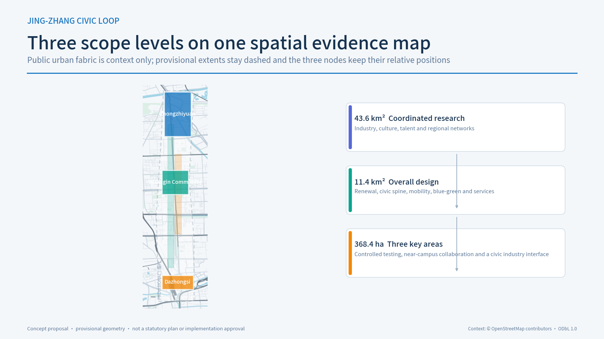
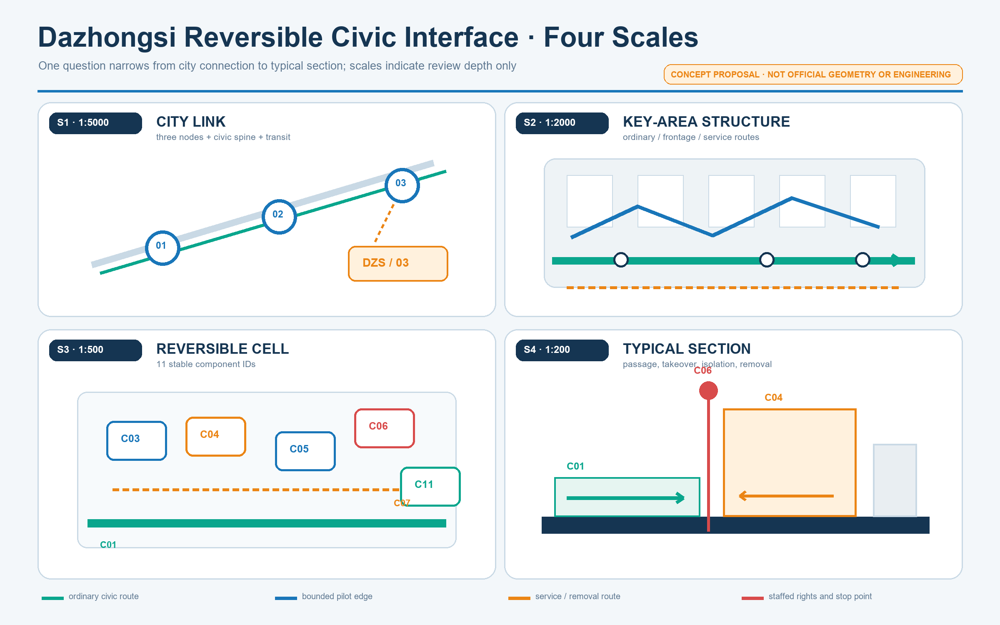
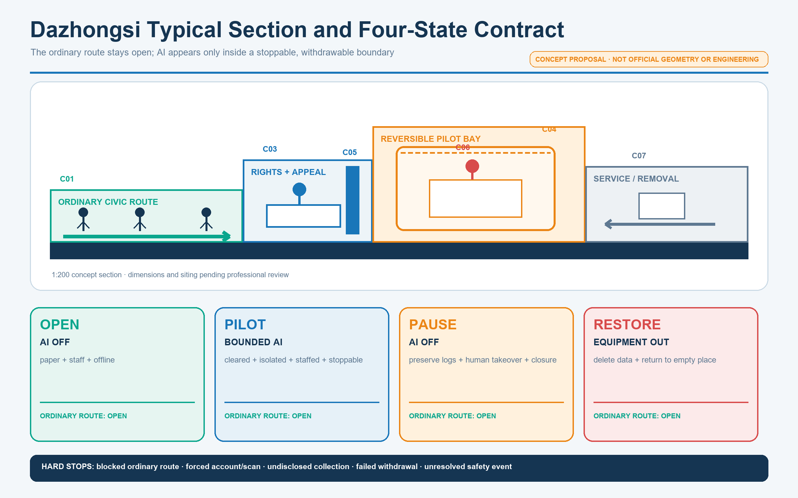
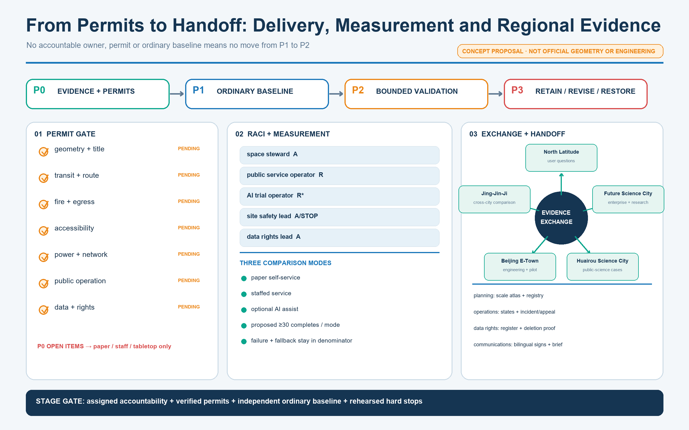
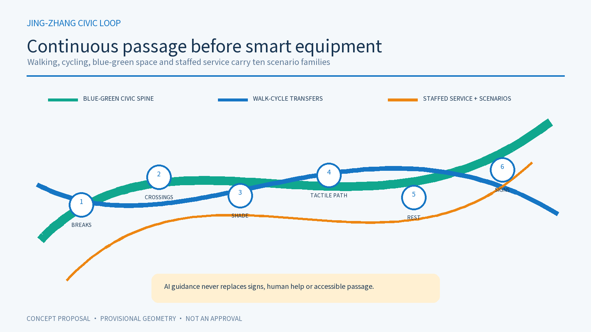

PROFESSIONAL DESIGN PACKAGE · BILINGUAL CONTRACT V1 · v0.1.4
Jing-Zhang Civic Loop

AI may exit; civic service may not
An AI innovation belt for everyday public service. This iteration advances one Dazhongsi flagship through space, operation, measurement and handoff.
Three evidence states
Verifiable fact
Only registered sources or recalculable package data.
Design response
Testable, stoppable, removable and handoff-ready concepts.
Pending
Official GIS, title, fire, accessibility, permits and accountable owners.
Three scopes and three nodes

Flagship: Dazhongsi Reversible Civic Interface
City link
three nodes, spine, transit
Key-area structure
ordinary, frontage, service
Operating cell
11 stable component IDs
Typical section
access, takeover, isolation, removal

Four-state operating contract
AI off
Paper, staff and offline explanation establish the ordinary baseline.
Bounded AI
Rights-cleared, isolated, staffed and stoppable.
AI off
Preserve logs, transfer to staff and close appeals.
Equipment out
Delete data and return to an empty place.

Permits, responsibility, measurement and handoff
7 permit dependencies
Geometry/title, transit/route, fire/egress, accessibility, power/network, public operation and data/rights are all pending.
5 RACI workstreams
Space, public service, AI trial, safety and data rights are separated; the safety lead has stop authority.
3 comparison modes
Paper self-service, staffed service and optional AI; failure and fallback remain in the denominator.

Three differentiated key-area trials
Zhongzhiyuan · T2
Baseline: staffed test and offline explanation.
Stop: disconnect on breach or failed recovery.
AI Origin · T1
Baseline: paper, staff and no-account entry.
Stop: human takeover if any group is blocked.
Dazhongsi · T3
Baseline: staffed clearance and explanation.
Stop: remove on failed withdrawal or broken audit.

Space, scenarios and long-term operation
Spatial system
Retain first and retrofit reversibly. Continuous walking and blue-green civic space precede smart equipment; title, heritage, fire and statutory controls gate further design.
Long-term operation
Problem Season, Open-source Season, City Beta Season and Proof Week; ordinary days, quiet periods and failure states are designed too.

Metrics, risk and submission status
Machine-readable evidence
risk.json · spatial.json · visual/assets/dazhongsi-operations.json · metrics.json · compliance_matrix.json
Validation boundary
Target: DETERMINISTIC · SPATIAL · VISUAL · PROFESSIONAL
Local checks are not official CI, professional approval or implementation authority.